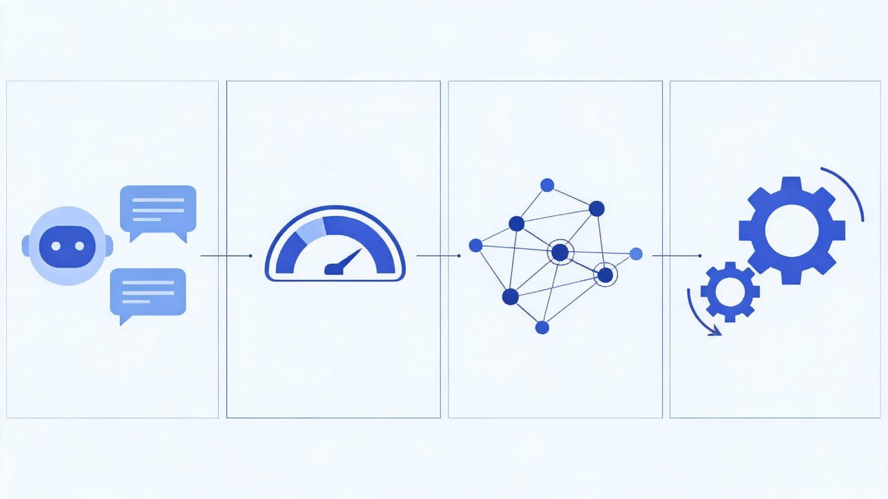
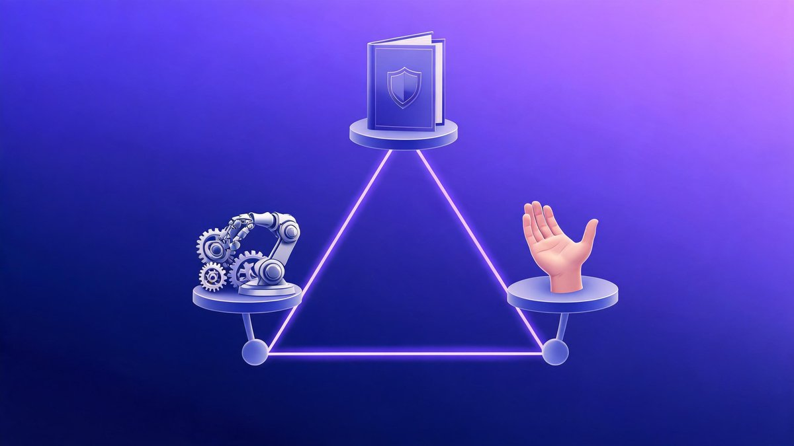

In 2026, financial services are shaped by three powerful forces: automation that scales decisions at machine speed, regulation that sets guardrails and expectations, and human oversight that ensures judgment, accountability, and trust. The winning firms aren’t the most automated—they’re the most balanced.
🔑 Key Takeaways
- Three pillars define 2026 finance: automation for scale, regulation for guardrails, human oversight for judgment and trust
- Selective automation beats full automation: push to autonomy only where errors are tolerable and measurable
- Regulation is an enabler, not a blocker — risk-based proportionality, sandboxes, model registries, and suptech support
- Effective oversight is designed into the workflow: confidence/impact triggers, four-eyes checks, documented overrides
- Balance is the strategy: automate repeatable work, regulate with clarity, keep humans empowered to question and override
- Pillar 1: Automation in Practice
- Pillar 2: Regulation as Enabler
- Pillar 3: Human Oversight That Works
- Comparing the Pillars Across Key Use Cases
- Regulators Explore Financial Services Support
- Metrics and Controls That Matter
- Operating Model: Who Does What in 2026
- Implementation Playbook
- Risks and Failure Modes to Avoid
- FAQs
- The Bottom Line
Pillar 1: Automation in Practice
Modern AI—predictive models, graph analytics, and large language models—now supports both front-office engagement and back-office efficiency. The imperative is selective automation: push to autonomy only where errors are tolerable and measurable, and keep humans in the loop where stakes are high.

- Customer service and advice: Retrieval-augmented assistants speed responses and paperwork, with guardrails and clear disclosures.
- Credit and underwriting: AI pre-screens applications, flags missing data, and proposes terms; underwriters review edge cases and adverse actions.
- Fraud, AML, and sanctions: Anomaly detection and network analysis reduce false positives; investigators validate alerts and suspicious activity reports.
- Markets and treasury: Signal discovery and execution within limits; human portfolio managers retain mandate and risk decisions with kill-switches.
- Payments and operations: Reconciliations and exception handling reach high straight-through rates; unresolved items escalate to operators.
- Finance and reporting: Close automation drafts narratives and footnotes; controllers and CFOs approve final disclosures.
What is selective automation in finance?
What is selective automation in finance? Selective automation is a deployment model in which finance teams automate repeatable, low-risk processes end to end while keeping human review on all high-stakes judgment calls. According to Medius research, 90% of finance teams still require human approval for AI-driven decisions in 2026, which is a clear signal that full autonomy is not the default. For example, invoice matching and reconciliation run as straight-through processing, while credit decisions, fraud escalations, and vendor onboarding keep a person in the loop. In practice, we found the rule of thumb is quite simple: push to autonomy only where errors are tolerable and measurable. First, classify all processes by impact; second, automate the repeatable tier; finally, instrument the rest with review queues, override controls, and audit trails so every automated decision remains explainable.
Pillar 2: Regulation as Enabler
Supervisors emphasize proportionality: higher-risk AI demands stronger controls. Expectations converge around transparency, testing, governance, and consumer protection, aligning with widely referenced frameworks such as the EU’s AI Act (phasing into effect), the NIST AI Risk Management Framework, and established model risk management practices. The OECD’s supervisory work makes the same point from the regulator’s side: regulation provides the foundational legal architecture for financial oversight (OECD).
- Risk classification: Tier systems by potential harm and apply commensurate controls.
- Documentation and traceability: Model cards, data lineage, decision logs, and clear audit trails.
- Validation and testing: Backtesting, stress and scenario tests, fairness/bias assessments, and robustness checks before go-live.
- Monitoring and incidents: Drift detection, performance SLOs, and defined thresholds for reporting material AI incidents.
- Third-party oversight: Transparency and testing rights for vendors, concentration risk management, and exit planning.
- Explainability and rights: Reason codes for decisions, human review channels, and contestability for affected customers.
- Operational resilience: Fallback procedures, graceful degradation to manual processes, and emergency kill-switches.
What do AI regulations mean for finance in 2026?
What do AI regulations mean for finance in 2026? Regulation is an enabler rather than a blocker: the emerging consensus is risk-based proportionality, in which higher-risk AI demands stronger controls and lower-risk use cases face a lighter touch. According to OECD observations and supervisory statements, expectations converge on transparency, testing, governance, and consumer protection, aligning with widely referenced frameworks such as the EU's AI Act. In simple terms, a fraud model that touches customers needs documented fairness checks, while an internal summarization tool needs far less paperwork. For example, supervisors now run sandboxes and tech sprints so firms can test AI under supervisory visibility and publish lessons for the industry. In practice, firms that map each system to a proportional control set move faster, because compliance becomes a checklist instead of a debate, and regulators treat documented governance as evidence of good faith.
Pillar 3: Human Oversight That Works
Effective oversight is designed into the workflow—not bolted on. It gives people context, authority, and clear triggers for intervention.
- Human-in-the-loop thresholds: Escalate when confidence is low, impact is high, or data falls out of distribution.
- Independent challenge: Model risk teams review design, assumptions, and monitoring; periodic red-teaming probes failure modes.
- Operator explainability: Provide reason codes, salient features, and counterfactuals to support decisions and customer conversations.
- Accountability and escalation: Named owners, four-eyes checks, and documented overrides with rationale.
- Learning from feedback: Use overrides, complaints, and incidents to recalibrate models and controls.
- Ethics and conduct: Guard against automation bias and ensure fair outcomes across customer segments.
What does human oversight of AI look like in practice?
What does human oversight of AI look like in practice? Effective oversight is designed into the workflow rather than bolted on after the fact: people get context, authority, and clear triggers for when to intervene. According to Medius, the 90% of finance teams requiring human approval for AI decisions are not resisting progress — they are building the human-in-the-loop process that regulators and auditors expect. For example, an anomaly flag routes to an analyst with full decision context, an override is logged with a reason code, and recurring overrides feed model retraining. In practice, we found the strongest teams define three things: who can override, within what timeframe, and with what documentation. Finally, oversight quality itself becomes a metric, as override rates, review latency, and escalation accuracy appear on 2026 scorecards right next to model precision.
Comparing the Pillars Across Key Use Cases

| Use case | Automate | Regulate | Human oversight |
|---|---|---|---|
| Credit decisions | Feature engineering and preliminary scoring | Fair-lending tests and adverse action notices | Review for marginal and high-impact cases |
| Trading and portfolio management | Signal generation and execution within limits | Market-abuse controls and best-execution | Mandate and risk oversight, kill-switches |
| Fraud/AML/sanctions | Detection and triage | KYC/AML obligations and recordkeeping | Investigator validation of escalations |
| Customer advice and servicing | Routine answers and document prep | Suitability and disclosures | Complex advice routed to human advisors |
| Operations and finance | Reconciliations and close tasks | Internal control frameworks | Executive attestations stay human |
Regulators Explore Financial Services Support
Beyond enforcing rules, supervisors increasingly help the industry adopt AI safely by clarifying expectations and enabling shared infrastructure:
- Sandboxes and tech sprints to test AI under supervisory visibility and publish lessons
- Reference control libraries mapped to risk tiers and aligned with recognized frameworks
- Model and algorithm registries to catalog AI systems, owners, and risk classifications
- Standard incident taxonomies and templates for reporting AI failures and bias events
- Explainability and fairness guidance suitable for consumer disclosures and audits
- Third-party expectations covering foundation models, data vendors, and cloud concentration risk
- Suptech adoption—regulators using AI to analyze complaints, risks, and model inventories for faster, data-driven supervision
Metrics and Controls That Matter
- Performance: accuracy, calibration, precision/recall, and stability under drift
- Fairness: demographic parity and error-rate parity checks, with documented trade-offs
- Explainability: reason codes and counterfactuals consumable by staff and customers
- Robustness and security: adversarial testing, prompt/indirect injection defenses, and data poisoning safeguards
- Privacy: data minimization, access controls, and compliant retention and consent management
- Resilience: decision latency SLOs, failover playbooks, and routine chaos testing of fallbacks
- Governance: RACI matrices, approval gates, periodic reviews, and immutable decision logs
Operating Model: Who Does What in 2026
- Board and executives: set risk appetite and approve high-risk AI deployments
- First line (business/product): own outcomes, embed controls, and monitor
- Second line (risk/compliance/data protection): set policy, perform independent challenge, and run model risk management
- Third line (internal audit): assess control effectiveness and evidence of adherence, including vendor oversight
- Engineering and data: maintain pipelines, observability, access controls, and change management
Implementation Playbook
- Inventory AI systems and classify by impact; assign accountable owners.
- Map each class to a proportional control set—avoid one-size-fits-all.
- Select automation levels: recommend, co-pilot, or full STP with safety nets.
- Design human-in-the-loop triggers and dashboards before go-live.
- Pre-deployment tests: fairness, stress/scenario, adversarial, and privacy checks with sign-offs.
- Observability: data/concept drift, quality, and safety alerts routed to on-call teams.
- Documentation: model cards, data lineage, change logs, and customer-facing explanations.
- Vendor governance: transparency clauses, testing rights, uptime/SLOs, and incident notification terms.
- Training: role-based curricula for developers, reviewers, advisors, and executives.
- Review cadence: quarterly for high-risk, annual for moderate, and continuous for critical real-time systems.
Risks and Failure Modes to Avoid
- Over-automation: silent errors when context shifts or chatbots answer out-of-scope queries
- Automation bias: staff deferring to model outputs despite red flags
- Feedback loops: models learning from their own past decisions and amplifying errors
- Fairness drift: demographic impacts changing as products scale to new segments
- Security gaps: prompt injection and data exfiltration via LLM tools and plug-ins
- Concentration risk: over-reliance on a single model provider or cloud region without viable exit paths
FAQs
What are the three pillars of 2026 finance?
Automation that scales decisions at machine speed, regulation that sets risk-based guardrails and expectations, and human oversight that ensures judgment, accountability, and trust. The winning firms aren’t the most automated — they’re the most balanced.
Which finance tasks should be automated and which need human review?
Automate repeatable, measurable work: reconciliations, close tasks, detection triage, routine answers. Keep humans on marginal credit cases, complex advice, adverse actions, escalations, and executive attestations — anywhere stakes are high or judgment is required.
Is regulation a blocker or an enabler for AI in finance?
An enabler. Supervisors emphasize proportionality — higher-risk AI demands stronger controls — and increasingly provide sandboxes, reference control libraries, model registries, and incident taxonomies to help firms adopt AI safely.
What does effective human oversight of AI look like?
It is designed into the workflow, not bolted on: escalation when confidence is low or impact is high, independent model-risk challenge, reason codes and counterfactuals for operators, four-eyes checks, and documented overrides that feed model recalibration.
What are the biggest AI failure modes in finance for 2026?
Over-automation, automation bias, feedback loops that amplify errors, fairness drift as products scale, prompt injection and data exfiltration through LLM tools, and concentration risk on a single model provider or cloud region.
The Bottom Line
The core message of the three pillars of 2026 finance is balance. Automate where processes are repeatable and risks are measurable, regulate with risk-based clarity, and keep capable humans empowered to question, override, and continuously improve the system. For the UK regulatory angle specifically, see our UK Financial Services Regulators’ Approach to AI in 2026 and, for hands-on account setup, the crypto exchange setup and verification guide.
Sources: Medius — AI Governance in Finance (2026), OECD — Supervision of Artificial Intelligence in Finance, Saifr — 2026 Trends: AI and Compliance in Financial Services, SoftCo — AI in Finance 2026: The CFO Guide.